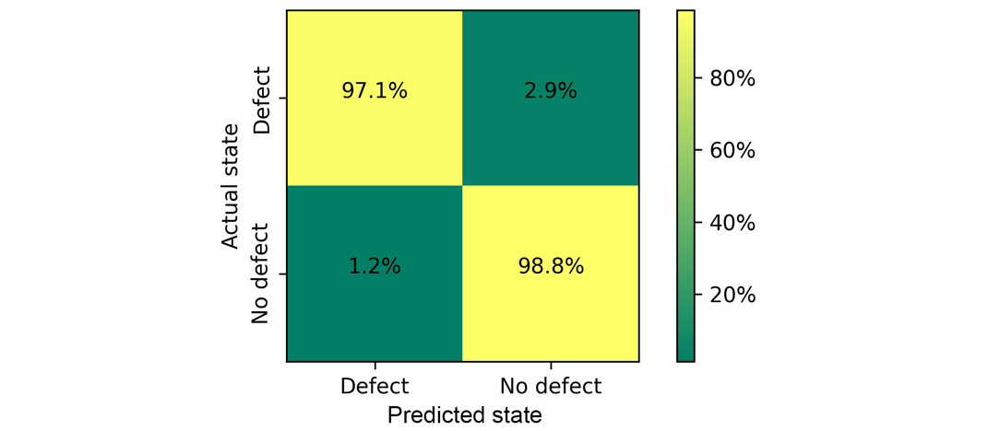
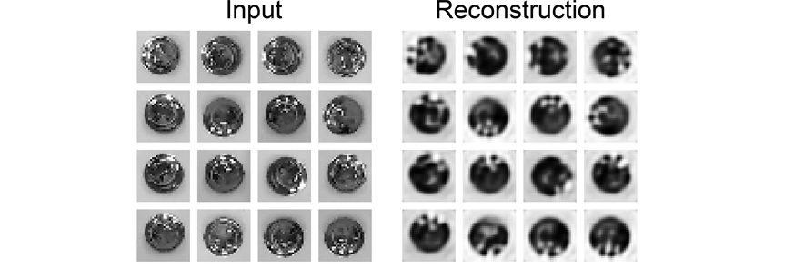

Vision based control of small educational double SCARA robot
Used tools and packages
Python OpenCV TensorFlow Scikit-learn NumPy Scipy C RaspberryPI MatlabIntroduction
This project aimed to develop an easy-to-build and deploy educational robot, which may be used during classes to study machine vision-based control and classification. This was achieved by a double SCARA structure driven by two stepper motors controlled by RaspberryPI Zero. The 3D CAD model of the designed manipulator is shown below:
As the gripper the electromagnet is used which may manipulate objects into one from selected boxes attached. The camera is observing the working area of the manipulator. Control of the position of the tool center point (TCP) is realized with the aid of inverse kinematics:
Manipulator parts were manufactured with the aid of 3D printing. The camera may provide information about the position of TCP and object location. For that purpose, the calibration needs to be performed:
In that way one may obtain, based on the image coordinates the coordinates in the real working area:
Object detection may be realized with OpenCV hblob analysis. Next, the location of each object within the image is used to calculate the position in the working area and to handle parts in the proper box.
Image classification
The proposed educational stand may be used for image recognition and classification. As an example, the small steel galvanized parts are used, which part of them have surface defects:

This is a real industrial problem occurring in mass production which should be handled by an automatic system of inspection. The previously described object detection method may be used for data collection:

Acquired data consists of 307 bad and 307 good images the size of which is 90px x 90px randomly located within the working area. Next, to increase the number of images, data augmentation was performed. Each of the images was rotated about an angle of 90⁰, 180⁰ and 270⁰. This resulted in a total number of colour images of 2456 of size 90px x 90px each. The dataset was split into data for training (60%), validation (20%) and testing (20%) which gives respectively 1476, 490 and 490 images. In each of these subsets, the distribution of features (defect/no defect) is equal (50%/50%). Before training, images were subjected to pre-processing, namely zero-centering with respect to the training dataset and converting into BGR images. These data are then used to train, validate and test neural network schematically shown below:

The network consists of two convolutional 2D layers with 3x3 kernel and rectified linear unit activation function followed by max pooling layers with pool size 2x2. In the end, the output after pooling is flattened and returned after the dense layer with softmax activation as the probability of class occurrence. The training was performed with Adam optimizer and as the loss the categorical cross-entropy was used. The results of testing are shown as confusion matrix below:
Sometimes we have to deal with heavily imbalanced datasets with a small number of data corresponding to the failure state. It is common in various diagnostics tasks where we do not have extensive test results and we only know how the system should perform in normal operation. In such cases, there is a need for the use of an unsupervised or semi-supervised learning approach. To simulate this situation we will use part of our dataset. For training and validation, we will use only images of parts without defects. Testing will be performed with both defect and no defect images. This results in 738 (100% without defect) images for training, 245 (100% without defect) for validation and 490 (50% defective / 50% without defect) for testing. To decrease the training time we applied different pre-processing. Images were resized to 28px x 28px, transformed into greyscale and normalized.
One of the typical applications of the unsupervised learning approach is anomaly detection. There are various anomaly detection methods, and one of them is to use of an autoencoder. An autoencoder is a special type of neural network designed to reconstruct its input. It might be used for dimensionality reduction and feature extraction. Input data are compressed by the encoder into the latent layer and then decoded by the decoder. Anomaly might be detected by analysis of latent space or reconstruction error. Figure below presents a convolutional autoencoder used for the detection of abnormal images in this study.
The encoder consists of five convolutional 2D layers with a rectified linear unit activation function and two max pooling layers. The decoder is constructed from five up-sampling transposed convolutional layers. While training, Adam optimizer with the loss as the mean squared error was used. Training and validation loss converges to small value of approx. 0.15. The result of reconstruction of training data is presented below:
To visualise the results we may transform latent space into three-dimensional space with the aid of T-distributed stochastic neighbour embedding (t-SNE), which is shown below:
After embedding the latent image data, a centred cluster corresponding to parts without defects is observed. Points for parts with defects are spread around this centre cluster. To detect whenever a point is within the blue cluster the k-means algorithm can be used. We assume that only blue points are known, which forms one cluster (k=1). Then we calculate the average of these points which corresponds to the cluster center. In the case presented center coordinates are near zero (tSNE1=-0.15, tSNE2=0.23, tSNE3=-0.04). Next, we calculate the distance of each blue point to the cluster centre and average them, which gives us the limiting distance (rlim=17.58). The point is considered an outlier if its distance to the cluster centre is greater than rlim. Otherwise, we assume that it is located within this cluster. The results of k-means-based classification are given below:

Summary
Presented educational stand may be successfully used for courses on:
- deep learning in machine vision,
- classification
- object tracking and detection,
- vision-based control.